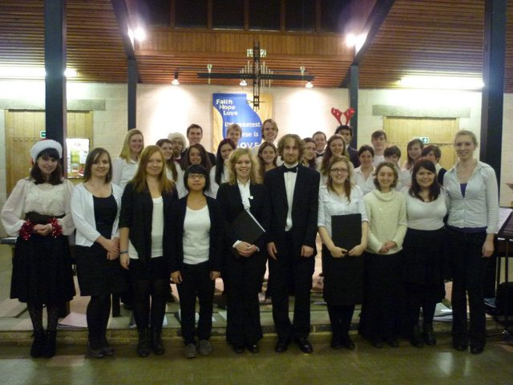

The Glee Christmas 2011 concert took place at Heslington Church, at 7.30pm, on Monday 12th December.
A selecton of this concert was successfully recorded, and can be found here!

Musical Director: James Taylor
Assistant Musical Director: Lucy Shepherd
Accompanist: William Oseland
Soprano
Alto
Tenor
Bass
Happy Together (The Turtles, arr. Partington)
You Are The New Day (John David)
The Silver Swan (Gibbons)
Double Violin Concerto, 1st Movement1 (J.S. Bach)
- Soloists : Lucy S. and Liz
Beati Quorum Via (Stanford)
- Committee piece : James, Stuart, Baillie, Callum, Lucy S., Mathilde, Liz
Strawberry Fields Forever (Lennon/McCartney)
Blackbird (Lennon/McCartney)
Angel (Sarah McLachlan)
- Soloists : Stuart and Ben
Byker Hill (Phillip Wilby)
Interval
Fairytale of New York (The Pogues)
The Angel Gabriel (trad. Basque)
O Come All Ye Faithful (J. Wade)
- Audience carol
Enter the Stable Gently (trad. Spanish)
Ding Dong! Merrily On High (trad. arr. Wood)
I Saw A Maiden (Anon.)
Toccata and Fugue in D Minor (J.S. Bach)
- Organ Solo : James Taylor
Hark! The Herald Angels Sing! (Mendelssohn)
- Audience carol
The Shepherd's Farewell (Berlioz)
Candlelight Carol (Rutter)
O Holy Night (Adolphe Adam)
- Soloists : Lorna, Stuart
If I recall correctly, there was an encore of Winter Wonderland (Bernard)
This work is licensed under CC BY-SA 4.0